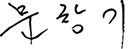

이디야커피, 대한민국을 대표하는
토종 커피브랜드
이디야커피는 2001년 3월 중앙대점 오픈을 시작으로 치열한 국내 커피전문점 시장 속에서 2020년 국내 최초로 3,300호점을 돌파하며 업계를 선도하고 있습니다.
품질 좋고 맛있는 커피를 합리적인 가격에 제공한다는 기본 원칙 아래 고객님들의 입맛을 사로잡기 위해 노력해온 이디야커피는 이제 모든 고객분들이 언제나 가장 가까이서 찾을 수 있는
'국민 브랜드'가 되었습니다. 이 모든 일들은 바로 고객님들의 뜨거운 사랑이 있었기에 가능한 일이었습니다.
이디야커피는 순수 토종 브랜드로서 2020년 준공한 자체 제품 생산시설 이디야 드림팩토리를 통해 앞으로 한층 더 뛰어난 품질의 원두와 커피 제품을 생산하며 국내를 넘어 전 세계에
대한민국 커피산업의 위상을 널리 알릴 것입니다.
앞으로 더욱 맛에 충실하고, 고객님의 말씀에 귀 기울이는 이디야커피가 되겠습니다. 더불어 고객님들께 받았던 사랑을 이 사회와 다시 나누는 이디야커피가 되도록 지속적으로
노력하겠습니다.
대표이사 문창기
